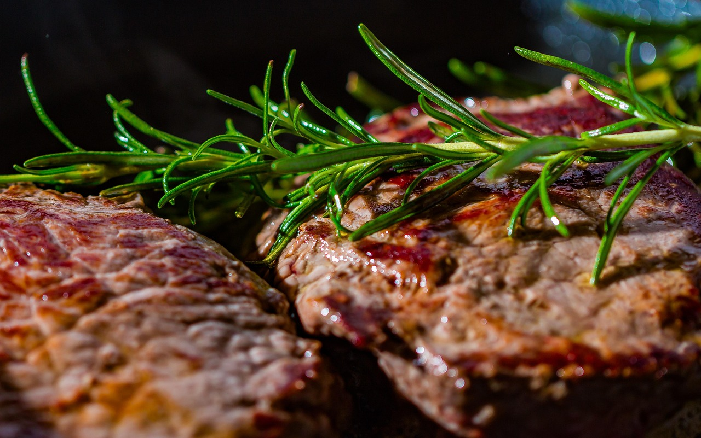

Oficina Central de Carnes y
Algo Más:
Calle Tec 123, Zacatlan, México
Fax: +123 456 7891
Llámanos al: +123 456 7890
Nuestros Productos
En Carnes Deliciosas, tenemos una amplia variedad de cortes de carne que satisfacen todos los gustos y necesidades culinarias. Desde cortes tradicionales hasta opciones más exclusivas, todos nuestros productos están seleccionados con el más alto estándar de calidad para garantizarte una experiencia excepcional. Aquí encontrarás todo lo que necesitas para tus parrilladas, comidas familiares y platillos gourmet.
Cortes de Carne de Res
🥩 Rib Eye
Un corte jugoso y sabroso, ideal para los amantes de los filetes con
un equilibrio perfecto entre sabor y ternura. Perfecto para asar a
la parrilla o cocinar al sartén.
🍖 Picanha
Uno de los cortes más populares en las parrilladas. Con una capa de
grasa que le da un sabor inconfundible, este corte es perfecto para
los amantes de la carne jugosa y sabrosa.
🥩 Bife de Chorizo
Otro corte argentino por excelencia. Ideal para aquellos que buscan
una pieza gruesa y llena de sabor, perfecta para sellar y servir en
su punto.
🍖 Lomo de Res
Un corte tierno y magro, ideal para preparaciones gourmet o para
quienes prefieren un corte más suave pero igualmente delicioso.

Cortes de Cerdo
🍖 Costillas de Cerdo
Con un sabor único y una textura tierna, nuestras costillas de cerdo
son perfectas para asar, hornear o preparar a la parrilla con tu
salsa favorita.
🥩 Lomo de Cerdo
Una opción magra y delicada, ideal para platos al horno o a la
parrilla. Se puede disfrutar con diversas marinadas o salsas.
🍗 Chuletas de Cerdo
Perfectas para preparar al sartén o a la parrilla, nuestras chuletas
de cerdo son jugosas y deliciosas, con un sabor inconfundible.
Cortes de Pollo
🍗 Pollo Orgánico
Criado de manera natural, sin hormonas ni antibióticos, nuestro
pollo orgánico tiene un sabor auténtico y una textura tierna y
jugosa. Perfecto para cualquier receta.
🍖 Pechuga de Pollo
Corte magro y versátil, ideal para cocinar a la parrilla, al horno o
en la sartén. Perfecta para recetas saludables.
🍗 Muslos de Pollo
Jugosos y con un sabor más intenso, nuestros muslos de pollo son
ideales para preparar al horno, a la parrilla o en guisos.
Otros Productos
🥓 Bacon Artesanal
Curado y ahumado con el mayor cuidado, nuestro bacon artesanal es
perfecto para darle un toque especial a tus desayunos o cualquier
platillo.
🍔 Carne Molida
Perfecta para hacer hamburguesas, albóndigas o para agregar a tus
salsas. De res, cerdo o una mezcla especial, nuestra carne molida es
siempre fresca y de la mejor calidad.
🌯 Carne para Tacos
Corte seleccionado para dar el mejor sabor en tacos y burritos. Ya
sea res, cerdo o pollo, esta carne es ideal para preparar los
mejores platillos mexicanos.